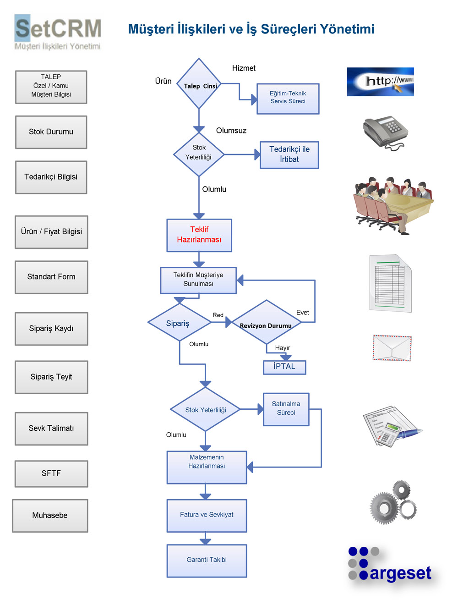

SetCRM Satış Yönetimi

Sipariş ve Teklif Yönetimi, Kampanya Yönetimi, Satış aktiviteleri ve İş Akışları, Sözleşme Yönetimi, Proje Yönetimi, Sevkiyat Yönetimi
SetCRM Pazarlama Yönetimi ile Müşteri veri tabanı tutabilir, müşterileri gruplayabilir, özelleştirebilirsiniz. Ayrıca telefon, SMS,direk mail, web, kablosuz cihazlar, e-mail, direk satış gibi müşteri ile ilişki içerisinde olunan tüm kanallarda müşteri veya müşteri grubuna özel kampanyalar hazırlar ve yönetirsiniz. Müşteri yaşam boyu değeri, müşteri sadakatı, müşteri ele geçirme maliyeti, müşteri elde tutma maliyeti, müşteri bazlı karlılık, gelir büyümesi, faaliyet maliyetleri, tavsiyeler, yüksek fiyat, gizli müşteri sonuçlarını değerlendirir. Bu veriler doğrultusunda veri tabanı yapısına bağlı olarak, müşteri seçilmesi, müşteri edinilmesi, müşteri korunması, müşteri derinleştirmesini sağlar. Ayrıca müşteri numaralarında yer alan bilgilerle, spesifik bir tüketiciyi veya tüketici bölümünü “müşteri bazında” görmeyi mümkün kılar. Sonuç olarak; müşteri davranışlarını, davranışlarındaki değişimleri, onları bu davranışa sürükleyen nedenleri anlayabilmeyi ve her tür müşteri ve müşteri grubu için özel yaklaşımları sağlayacaktır.
SetCRM satış yönetimi, fırsatlar ile başlayan satış sürecini, sevk ve satış sonrası hizmetler dahil tüm süreçlerde doğru ve işlevsel bilgiler oluşturmak ve sunmak için tasarlanmıştır.
SetCRM Satış Yönetimi, işletmenize sunduğu komple satış gücü otomasyonu çözümü sayesinde, satış ekibinizin tüm işletme çalışanları ile işbirliği içerisinde daha etkin biçimde satış yapmasını ve buna bağlı olarak karlılığınızın artmasını sağlar. SetCRM satış personelinize hedef gelir, gerçekleşen gelir, satış planları, müşteri ihtiyaçları, satın alma eğilimleri, müşteri bilgileri, müşteri cari hesabı gibi bilgilere kolaylıkla ve hızla ulaşarak hızlı ve karlı satış gerçekleştirme imkanı tanır. Mobil satış ekibinizi sisteme entegre ederek, saha satış operasyonlarınızı daha verimli kılmanıza ve gerçek zamanlı olarak yönetmenize olanak tanır. SetCRM satış yönetimi ekibinizin satış fırsatlarını kolaylıkla değerlendirmesini, gerçekçi satış tahminleri yapmasını sağlayan fonksiyonlara sahiptir. Ayrıca ticari programınızla entegre çalışarak satış ekibinin müşteriye ait tüm cari ve muhasebe bilgilerini online olarak görmesini sağlar.

- Satış aktiviteleri, firma ve personel aktivite kayıtları ile satış sürecinde yol gösterici olacaktır.
Webtabanlı SetCRM yazılımı ile sisteminize nerede olursanız olun internet yolu ile erişerek kolaylıkla müşteri bilgilerinize ulaşabilir, teklif hazırlayabilir, firmanızın standart teklif şablonu ile teklifinizi derhal müşterinize e-mail yolu ile iletebilir, ilgili tekliflerinize, gelişmiş filtreleme seçenekleri ile her zaman kolaylıkla erişebilirsiniz. Güncel olarak teklifleriniz ile ilgili raporlar alabilirsiniz.
- Kolay kullanılabilir arayüz ekranları ile teklifinizi oluşturma aşamasında, maliyet, karlılık, iskonto hesaplamalarını, muhasebe entegrasyonu ile ürün stok ve müşteri bakiye durumlarını kontrol edebilirsiniz.
- TCMB Döviz Kurları ile entegre edilmiş SetCRM sisteminde,günlük döviz kurlarıyla, her para birimi ile teklif oluşturabilir, dilerseniz ürün resimlerini tekliflerinizde kullanabilirsiniz.
- Teklife bağlı olarak, satınalım işlemleri başlatabilir, fatura için muhasebe, sevk için depo işlemleri, satış sonrası işlemler için teknik servis işlemlerini başlatabilirsiniz.Tekliflerinizin onayı ile diğer (sipariş, satınalım, stok, sevkiyat, fatura, teknik servis) tüm adımları ilgili birimler ile eş zamanlı olarak takip edebilirsiniz.
- SetCRM ile satış işlemleri boyunca kullanılacak olan formlar (Teklif, sipariş teyid, satış fatura talep, ürün bilgileri detay, sevkiyat takip, cihaz teslim vb.) kullanım şart ve durumlarına göre esnek olarak sistem tarafından üretilir.
- Her menüde özet rapor bilgileri ve daha detaylı excel raporları ile iş akışlarında doğru ve güvenilir olarak takip imkanı sağlanır.
- Ürünler ve müşteri bilgilerine doğru olarak erişir, işlemlerde hata olasılığını en aza indirebilirsiniz.
- Çalışanlarda verimlilik, müşterilerde memnuniyet artışı SetCRM Satış yönetimi ile mümkün olacaktır.
SetCRM Kampanya ve Promosyon Yönetimi farklı müşteri kategorileri için farklı fiyat listeleri oluşturup, güncellemenizi, promosyon aracı ile müşteri gruplarına özel promosyonlar hazırlayıp duyurmanızı ve esnek aksiyon planları yapmanızı sağlar. SetCRM müşteri bölümüne, bayilere veya satış kanalına yönelik fiyatlandırma yapmanızı ve bir bölüme veya direkt müşteriye özel fiyat listeleri oluşturmanızı pratik bir hale getirir. SetCRM ‘de ürün fiyatı doğrudan fiyat listesi ile ilişkilidir. Bu sayede örneğin yüksek mal alımında bulunan bir müşteriye kota indirimli fiyat listesi gösterilirken, daha küçük satın alma yapan bir müşteriye farklı bir fiyat listesi gösterilebilir. Ayrıca fiyat listelerinde değişiklik yapmak ve yeni fiyat listeleri oluşturmak çok kolay bir hale gelir. Fiyat listelerine son geçerlilik tarihi konarak o günden sonra yayından kaldırılması sağlanır. SetCRM Promosyon yönetimi satış modülü ile birebir entegre çalışır. SetCRM süreli olarak %indirim, bedava ürün, armağan, puan, dönem primi v.b. farklı romosyonlar yaratmanıza ve uygulamanıza imkan tanır.